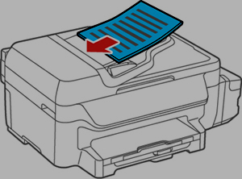

When the semester ends I often scan my notes but it has always been a huge pain to scan large amounts of papers. A few months ago my brother was telling me how he scan his old notes and introduced me to the document feeder where you can place your notes into the feeder and all the pages will be scanned automatically. This amazed me because I’ve been painstakingly scanning each page individually, scanning the same paper twice but on a different face (side).

An illustration how to use an automatic document feeder (ADF). Adapted from Epson
However, there is one issue with the automatic feeder, at least the one we have. You can only scan one side of the page. When I heard the issue my brother was facing, I quickly knew the solution. There are tons of PDF utilities that is available online. The procedure to scan large documents on a document feeder is the following:
- Load the document on the document feeder as seen in the image above with the front side facing upwards (i.e. towards your face) and scan
- Flip the paper such that the backside is facing upwards (i.e. towards your face) and scan
You will now have two pdf documents: one front side (front.PDF) and the other is the backside but in reverse order (back-reverse.PDF). To reverse the order of the pages:
pdfjam back-reverse.PDF 'last-1' --outfile back.PDF
You will need to install pdfjam from https://github.com/rrthomas/pdfjam which states you should install it via TexLive for convenience sakes.
With the two pdf in the right order, you need to merge the two pdf such that each page interleaves the other so that we can have the document in the right order (this is called shuffle). pdftk is a tool that can be installed via your local Linux software package manager is a tool that merges pdf with a bunch of other features such as adding watermarks or encrypting pdfs. This tool actually originates from PDF Labs but open source enthusiast has ported the program to Java from what I can recall.
pdftk A=front.PDF B=back.PDF shuffle A B output doc.pdf